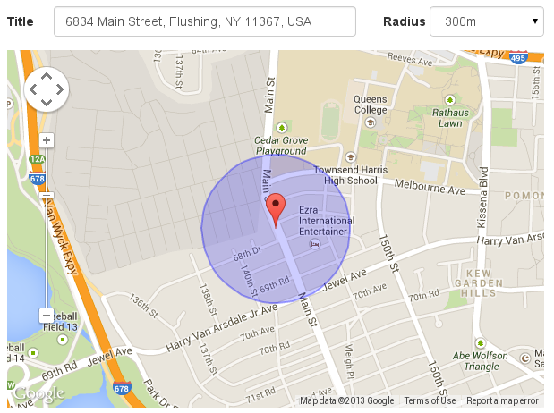

<app-header [backButton] = "true" backRoute = "/calltaker" title="Neues Incident"></app-header>
<div class="container">
   
      <mat-stepper #stepper>
        <mat-step [stepControl]="firstFormGroup">
          <form [formGroup]="firstFormGroup">
            <ng-template matStepLabel>Standort</ng-template>
            <div class="center"> 
                <mat-form-field>
                    <mat-label>Beschreibung Adresse</mat-label>
                    <textarea matInput formControlName="firstCtrl" placeholder="Ex. 1 Main St, New York, NY"
                           required> </textarea>
                  </mat-form-field>
            </div>
            
          </form>
        </mat-step>
        <mat-step>
          <ng-template matStepLabel>Fragen</ng-template>
          <mat-tab-group [selectedIndex]="selectedIndex">
            <mat-tab>
              <ng-template mat-tab-label>
                <mat-icon class="check">check</mat-icon>
                First
              </ng-template>
              <div class="tab-center">
                <h3>Frage 1:</h3>
                <mat-form-field>
                  <mat-label>Select</mat-label>
                  <mat-select>
                    <mat-option value="one">First option</mat-option>
                    <mat-option value="two">Second option</mat-option>
                  </mat-select>
                </mat-form-field>
                <button mat-flat-button color="primary" (click)="changeIndex(1)">Bestätigen</button>
                </div>
            </mat-tab>
          
            <mat-tab >
              <ng-template mat-tab-label>
                <mat-icon class="check">check</mat-icon>
                Second
              </ng-template>
              <div class="tab-center">
              <h3>Frage 2:</h3>
              <mat-form-field>
                <mat-label>Select</mat-label>
                <mat-select>
                  <mat-option value="one">First option</mat-option>
                  <mat-option value="two">Second option</mat-option>
                </mat-select>
              </mat-form-field>
              <button mat-flat-button color="primary" (click)="changeIndex(2)">Bestätigen</button>
              </div>
            </mat-tab>
          
            <mat-tab>
              <ng-template mat-tab-label>
                <mat-icon class="notcheck">close</mat-icon>
                Third
              </ng-template>
              <div class="tab-center">
                <h3>Frage 3:</h3>
                <mat-form-field>
                  <mat-label>Select</mat-label>
                  <mat-select>
                    <mat-option value="one">First option</mat-option>
                    <mat-option value="two">Second option</mat-option>
                  </mat-select>
                </mat-form-field>
                <button mat-flat-button color="primary" matStepperNext>Bestätigen</button>
                </div>
            </mat-tab>
          </mat-tab-group>
        </mat-step>
        <mat-step>
          <ng-template matStepLabel>Klassifikation</ng-template>
          <div class="center">
            <p>Empfehlung des Klassifizierungssystems:  </p>
            <h2>Atemnot</h2>
          <mat-form-field>
            
            <mat-label>Select</mat-label>
            <mat-select>
              <mat-option value="one">First option</mat-option>
              <mat-option value="two">Second option</mat-option>
            </mat-select>
          </mat-form-field> <br>
          <div class="center">
            <p>Zusammenfassung des Befragungsschemas</p>
            <mat-chip-set aria-label="Fish selection">
              <mat-chip>3 verletzte Personen</mat-chip>
              <mat-chip>Schnittwunden</mat-chip>
              <mat-chip>Schwer zugänglich</mat-chip>
              <mat-chip>Bewusstlos</mat-chip>
            </mat-chip-set>
          </div>
          <br>
          <button mat-flat-button color="primary" (click)="saveIncident()" matStepperNext>Incident speichern</button>
        </div>
        </mat-step>
      </mat-stepper>

</div>